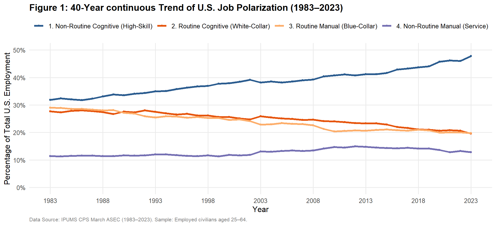
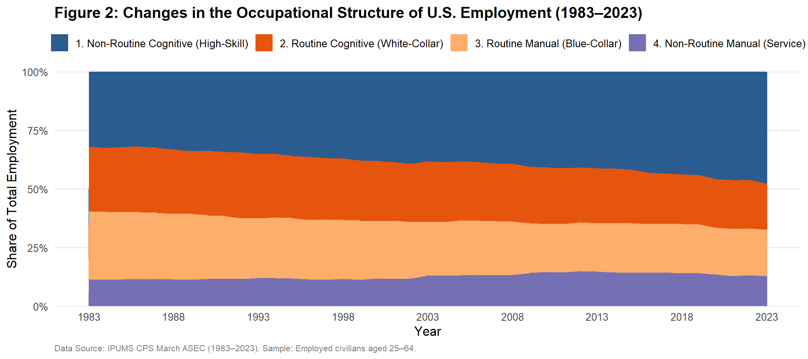
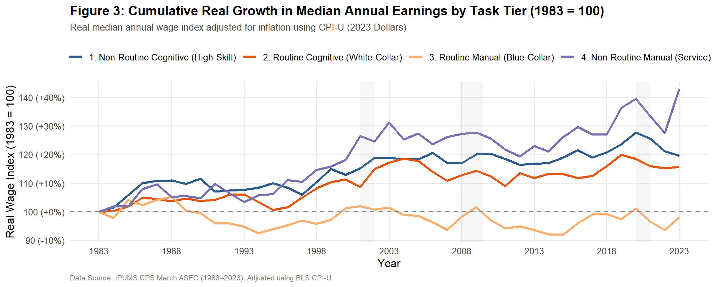
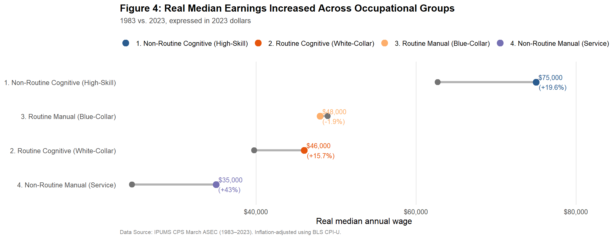

How has the U.S. labor market changed over the past 40 years?
1. Question and Motivation
The U.S. labor market looks very different from it did in the 1980s. Some types of jobs have become much more common, while others have become less common. Wages have also changed differently across occupations.
This leads to my question:
How has the occupational structure of the U.S. labor market changed since the 1980s, and how have real wages evolved across different types of occupations?
To solve this problem, I focus on 4 types of occupations based on the tasks workers perform in this project: Non-Routine Cognitive, Routine Cognitive, Routine Manual, and Non-Routine Manual. I use descriptive statistics and visualizations to compare employment shares and real wages from 1983 to 2023.
2. Data Processing
I use microdata from the IPUMS Current Population Survey (CPS) from 1983 to 2023. The CPS provides information on employment, occupations, income, and other characteristics of U.S. workers.
To study changes in the occupational structure of the labor market, I focus on employed workers ages 25–64. This helps me focus on people who are more likely to be in the working-age population and reduces the influence of people who are still in school or close to retirement.
For wages, I use reported annual wage income and adjust it for inflation using the CPI-U, so that all wages are expressed in 2023 dollars. I then calculate the weighted median real wage for each occupational group and year.
Because the CPS is a survey, I use the ASEC sampling weight (ASECWT) when calculating employment shares and median wage statistics. This allows the results to better represent the U.S. population covered by the survey rather than simply reflecting the number of observations in my sample.
3. The Standard Task-based Model
To organize occupations, I use the standard task-based model(Autor, Levy, and Murnane 2003), a classic framework in labor economics.
The basic idea is simple: instead of thinking about jobs only as “high-skill” or “low-skill,” we can think about the different tasks that workers perform. The key idea is that an occupation can be viewed as a bundle of tasks, and production depends on combining different types of tasks.
These tasks can be classified along two dimensions. The first is whether the work is mainly cognitive or manual, and the second is whether the tasks are routine or non-routine.
The cognitive or manual dimension captures whether a job relies mainly on problem-solving, judgment, and information processing or on physical and manual activities.
The routine or non-routine dimension captures whether tasks are repetitive and can be clearly specified by rules and procedures, or whether they require flexibility and are more difficult to codify and automate.
Using the IPUMS OCC1990 occupation classification, I group occupations into four task categories: Non-Routine Cognitive, Routine Cognitive, Routine Manual, and Non-Routine Manual. The detailed occupation mapping and sample construction are described in the accompanying code.
3.1 Four Types of Occupations Based on Tasks
| Task Type | Key Features | Examples | Impact of Technology / AI |
|---|---|---|---|
| Cognitive Routine | Repetitive tasks that follow clear rules and procedures. | Bank tellers, data entry clerks, entry-level accountants | More exposed to automation through software, algorithms, and AI. |
| Manual Routine | Repetitive physical tasks that follow fixed procedures. | Assembly-line workers, warehouse sorters, machine operators | More exposed to replacement by robots and automated equipment. |
| Cognitive Non-Routine | Tasks requiring creativity, problem-solving, judgment, and communication. | Researchers, software architects, managers, physicians | Technology can complement these tasks and increase productivity. |
| Manual Non-Routine | Physical tasks requiring flexibility, spatial awareness, and adaptation to changing environments. | Cleaners, caregivers, restaurant workers, truck drivers | Difficult to automate completely because tasks are harder to standardize. |
4. Data Descriptive Analysis
(b) Median Real Wage by Occupational Group
The table below shows the weighted median real wage at five-year intervals. All values are in 2023 dollars.
| Year | Non-Routine Cognitive | Routine Cognitive | Routine Manual | Non-Routine Manual |
|---|---|---|---|---|
| 1983 | $62,715 | $39,770 | $48,948 | $24,474 |
| 1988 | $69,543 | $41,211 | $51,513 | $25,757 |
| 1993 | $67,477 | $42,173 | $46,391 | $25,304 |
| 1998 | $69,165 | $42,995 | $46,874 | $28,040 |
| 2003 | $74,520 | $46,600 | $49,680 | $32,115 |
| 2008 | $73,379 | $44,841 | $48,118 | $31,135 |
| 2013 | $73,247 | $44,471 | $45,779 | $30,083 |
| 2018 | $75,718 | $46,111 | $48,537 | $31,064 |
| 2023 | $75,000 | $46,000 | $48,000 | $35,000 |
5. Data Visualization
(1) The occupational structure has shifted toward non-routine cognitive work


Figure 1 and Figure 2 shows the employment share of the four occupational groups from 1983 to 2023.
Non-Routine Cognitive employment increased steadily, from about one-third of employment in 1983 to almost one-half in 2023.
At the same time, both Routine Cognitive and Routine Manual jobs became a smaller share of total employment.
In contrast, Non-Routine Manual employment remained relatively stable for much of the period and increased somewhat around the late 2000s and early 2010s before declining slightly toward 2023.
Overall, the figure suggests a long-run shift in the composition of employment. The U.S. labor market has become increasingly concentrated in non-routine cognitive occupations, while routine forms of cognitive and manual work have become relatively less common.
Technology is one possible explanation for this pattern because computers, especially artificial intelligence, can replace some routine tasks while complementing work that involves problem-solving and judgment.
(2) Wage growth has differed substantially across occupational groups

Figure 3 compares the cumulative growth in the real median annual wage, with each group normalized to 100 in 1983. Also, the wage measure is adjusted for inflation using CPI-U and expressed in 2023 dollars.
The largest increase is in Non-Routine Manual occupations, reaching roughly 143 relative to its 1983’s 100. One possible explanation is that many occupations in this group are concentrated in the service sector, which has expanded substantially over the past several decades.
Non-Routine Cognitive wages also increased substantially, reaching around 120. Routine Cognitive wages rose more moderately, to around 115.
Routine Manual occupations show a very different pattern. Their real median wage fluctuated considerably over the period and ended slightly below their 1983 level. This pattern may be related to technological change, as routine manual tasks are often easier to automate or replace with technology. At the same time, globalization and changes in the demand for different types of labor may have also contributed to the relatively weak wage growth in these occupations.
This is an important result because it shows that employment growth and wage growth do not move together in a simple way. Non-Routine Cognitive employment expanded the most in terms of employment share, but Non-Routine Manual occupations experienced the largest cumulative real wage growth in this comparison.
The shaded recession periods also show that wage trends can fluctuate around major economic downturns. However, the long-run differences between occupational groups are more important than any single short-term movement.
(3) What do these changes look like in actual wage levels?

The previous figure 3 focuses on wage growth relative to 1983. It is useful for comparing how quickly wages changed across occupational groups, but it doesn’t show the actual level of earnings.
Figure 4 compares the actual median real wage in 1983 and 2023. The left point shows the 1983 wage, while the right point shows the 2023 wage. The connecting line shows the change over the 40-year period, and the percentage next to the 2023 point shows the cumulative real wage growth. The figure uses the same weighted median real wage measure as the previous analysis.
The comparison reveals clear differences in both wage levels and wage growth:
Non-Routine Cognitive occupations had the highest median real wage in both years, increasing from $62,715 in 1983 to $75,000 in 2023, a 19.6% increase.
Routine Cognitive wages also increased, from $39,770 to $46,000, a 15.7% increase.
In contrast, Routine Manual wages changed very little, declining slightly from $48,948 to $48,000, a decline of about 1.9%.
Non-Routine Manual group shows the largest proportional increase, with median real wages rising from $24,474 to $35,000, a 43.0% increase. However, it still had the lowest median wage level in 2023. This highlights an important distinction: a group can experience relatively strong wage growth while starting from a lower wage level and still earning less than other groups.
Together, Figures 3 and 4 provide a more complete picture of wage inequality across occupations. Figure 3 shows how quickly wages changed relative to each group’s starting point, while Figure 4 shows the actual wage levels in 1983 and 2023. Looking at both measures helps distinguish between relative wage growth and absolute wage levels.
6. What Do These Results Tell Us?
The results point to three findings.
First, the composition of employment changed substantially. Over the past 40 years, the U.S. labor market has shifted strongly toward Non-Routine Cognitive occupations, while routine cognitive and routine manual work have become smaller parts of total employment.
Second, real wage growth differed across occupational groups. Non-Routine Cognitive occupations continued to have the highest wage levels, Non-Routine Manual occupations had the largest percentage increase, while Routine Manual occupations had almost no long-run growth.
Third, employment growth and wage growth were not the same thing. The occupation group that expanded the most was not the group with the largest proportional increase in wages.
The main takeaway is that the U.S. labor market did not change in just one aspect. Both the types of jobs people do and the wages associated with those jobs have changed. Looking at both employment shares and wages gives a clearer picture of how the labor market has evolved since the 1980s.